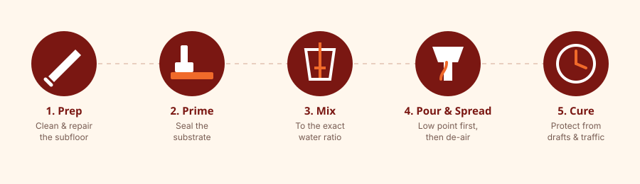

Clean and prime the subfloor, mix the compound to the manufacturer's exact water ratio, pour starting at the lowest point of the room, spread quickly with a gauge rake, de-air with a spiked roller, and keep the area free of drafts and traffic while it cures.

Before You Start
Self-leveling concrete sets fast once mixed — usually within 15–30 minutes — so the preparation work matters more than the pour itself. Confirm the subfloor is structurally sound, free of dust, grease, and loose debris, and within the moisture range your product allows. Fill large gaps or holes with an appropriate patching compound first; self-leveler is not designed to bridge big voids on its own.
Tools and Materials
- Primer matched to your substrate and self-leveler brand
- Low-speed mixing drill and paddle
- Two clean mixing buckets
- Gauge rake
- Spiked (de-aerating) roller
- Moisture meter
- Painter's tape and cove strip for edges, if needed
Step-by-Step Process

- Prep: Vacuum and degrease the substrate. Repair cracks and holes wider than your product's fill limit.
- Prime: Apply primer evenly and let it dry to the tack or full-dry state specified on the label — usually 30 minutes to a few hours.
- Mix: Add powder to water (not the reverse, unless the label says otherwise) and mix with a paddle until lump-free, typically 2–3 minutes.
- Pour: Start at the lowest point of the room and work toward the door so you aren't trapped in wet material.
- Spread: Use the gauge rake to guide flow into corners and along edges — the material does most of the leveling itself.
- De-air: Pass the spiked roller through the wet surface to pop trapped air bubbles before it starts to set.
- Protect: Close off drafts, block direct sun, and keep pets and foot traffic off the surface for the manufacturer's stated cure window.
Common Mistakes
- Guessing the water ratio instead of measuring it — too much water weakens the cured surface and can cause cracking.
- Skipping primer on porous concrete, which can cause pinholing or poor bond.
- Mixing more material than can be poured within the working time.
- Pouring in direct sun or near an open window, which causes uneven drying and surface cracking.
- Walking on the surface before the manufacturer's cure time has passed.
Working Time and Weather
Most products have a working time of 15–30 minutes once water is added, so plan the pour in sections if the room is large, using cove strip or temporary dams to control the pour rate. Ambient temperature affects both working time and cure time — cold slows curing, heat speeds it up and shortens your working window.
Frequently Asked Questions
Can two people pour a large room alone?
Yes, but plan the room in sections or have materials pre-measured, since most compounds set within 15–30 minutes of mixing and a large room can outrun a single batch.
What happens if I add too much water?
Excess water weakens the cured compound and increases the risk of shrinkage cracking — always measure to the manufacturer's ratio rather than eyeballing consistency.
Do I need to seal self-leveling concrete before installing flooring?
Most flooring installations go directly over cured self-leveler, but always confirm moisture and cure requirements against both the self-leveler's and the flooring manufacturer's instructions.
Related Guides
Sources & References
- Manufacturer installation instructions (MAPEI, Ardex, Laticrete, Quikrete) for mixing ratios and working-time guidance